<div class="Layout__wrapper">
    <main class="Layout__main">
    <div class="sedimentContainer">


        <div id="sedimentSubOne" class="TemplateContainer">
            <div class="TemplateBlock">
            <h1 id="sedimentMainTitle" class="mainTitle">
                Following sedimentary <br>
                life-ways
            </h1>
        
            <p id="sedimentCopy" class="copyText">
                "Sediments are a sort of epic poem
                of the earth. When we are wise
                enough, perhaps we can read in
                them all of past history."<sup class="titleSup">1</sup>
            </p>
        
            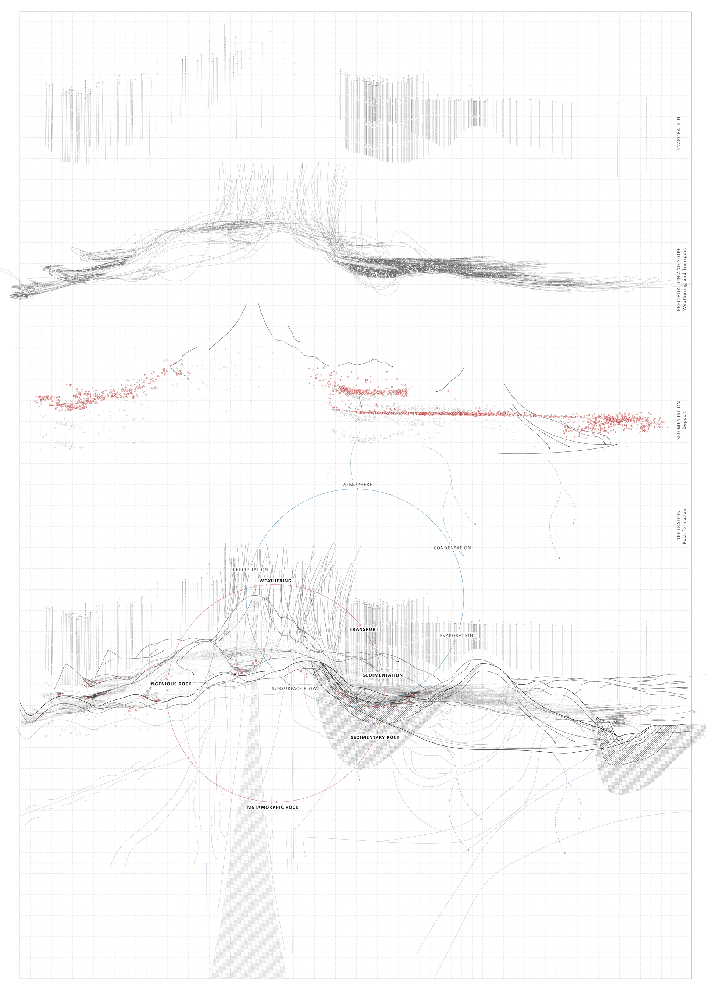
        
            </div>
        </div>
        
        <div id="sedimentSubTwo" class="TemplateContainer">
            <div class="TemplateBlock">

              <p class="copyTextLeft sedimentCopyTwo">
                "Water has certainly always been an intense site and
                agent of planetary terraforming".<sup>2</sup>
              </p>
        
            <p class="copyTextLeft sedimentCopyOne">
      
                The monsoon and its cycles are coextensive with
                sediment, formed when seasonal monsoon rains
                rot rock surfaces, dislodge their matter, swirl it
                across landscapes, deposit it on floodplains and
                carry it to the ocean. Here it is pushed around by
                tides and currents and slowly sinks, until, disturbed
                by tectonic forces, it remerges as the folded strata
                of new sedimentary rock. These processes are the
                mechanisms through which the earth recycles itself.
                They transform the monsoon from a weather system
                into a geomorphic agent and undermine the idea
                of terrain as a stable, inert backdrop to the human
                action playing out on, above and under its surfaces.
            </p>
        
            <div id="sedimentGridOne" class="TemplateImageContainer">
                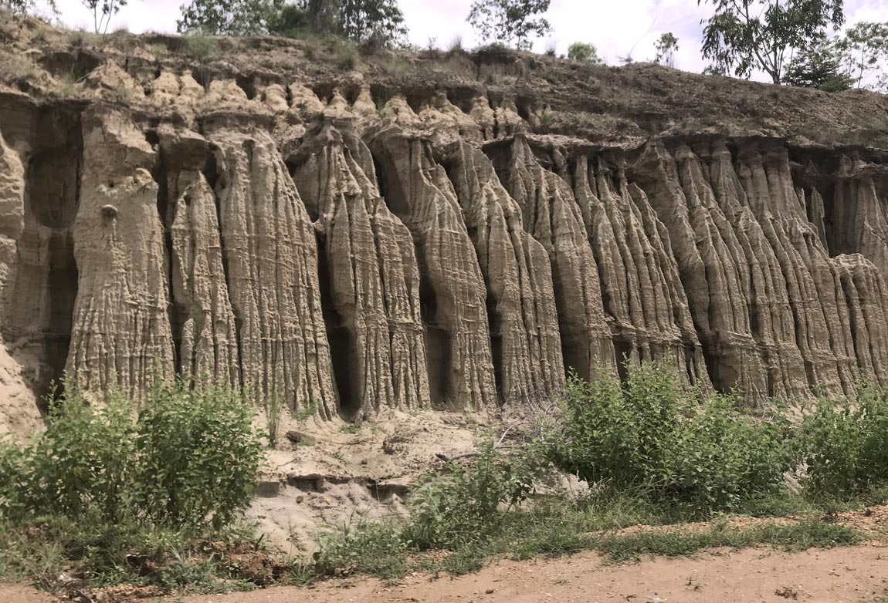
        
                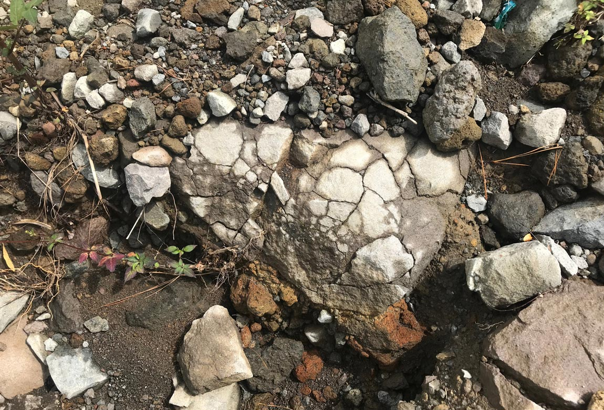
            </div>
        
            <div id="sedimentGridTwo" class="TemplateImageContainer">
        
                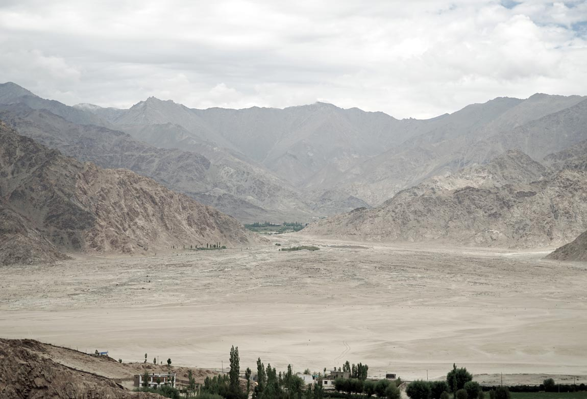
        
                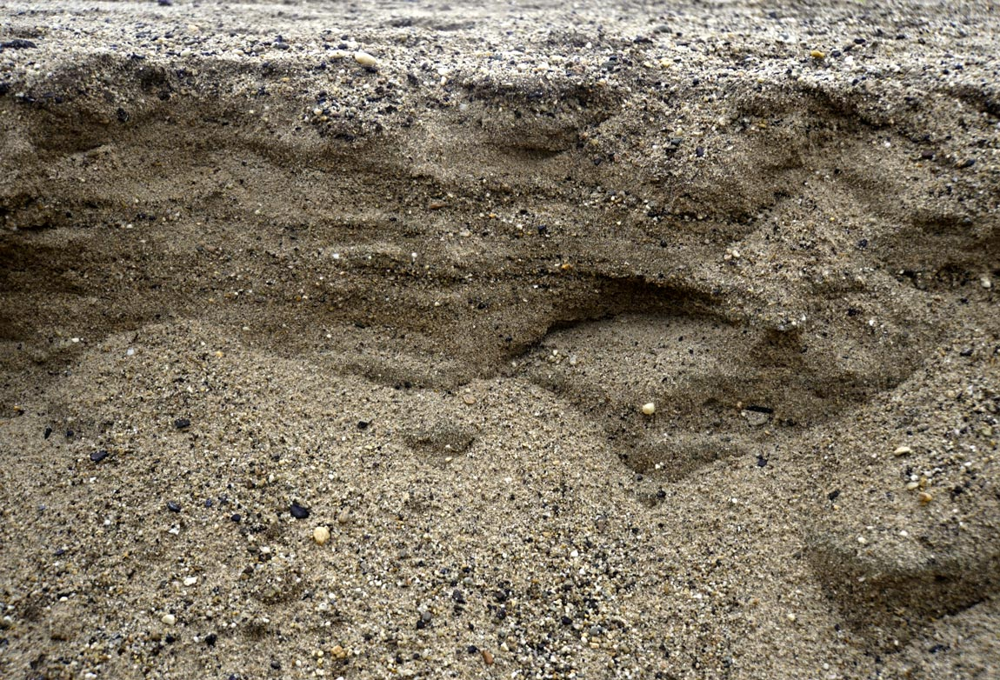
        
            </div>
        
            <iframe id="sedimentVideoFour" src="https://www.youtube.com/embed/DszMYjPUB2M?modestbranding=1&rel=0&controls=0&autoplay=1&mute=1&playlist=DszMYjPUB2M&loop=1" frameborder="0" allow="accelerometer; autoplay; clipboard-write; encrypted-media; gyroscope;" allowfullscreen></iframe>
            
            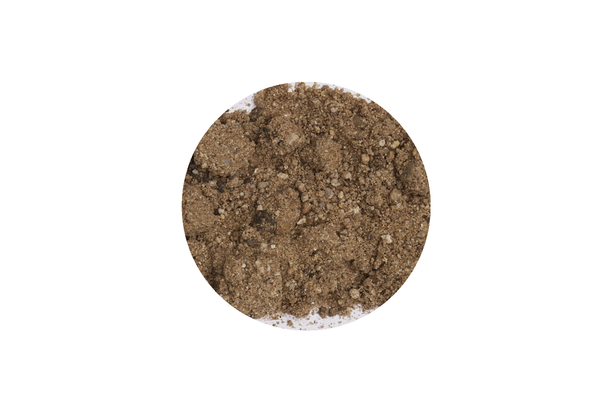
        
            <p id="sedimentImageDescriptionOne" class="TemplateImageDescription">
              Top: drawing of the hydrologic-tectonic cycle.<br> <br>
              Middle: the Himalayas in Ladakh. <br> <br> 
              Bottom: sedimentary and volcanic rock,
              Myanmar, September 2019.
            </p>
        
            </div>
        </div>
        <div id="sedimentSubThree" class="TemplateContainer">
            <div class="TemplateBlock">
            <h1 class="mainTitle">
                Weathering climate
            </h1>

            <p class="copyTextLeft sedimentCopyThree">
                "Like these trees, we are all, each of us, weathering".<sup>4</sup>
            </p>
        
            <p class="copyTextLeft sedimentCopyFive">
                The earth’s rocks were formed at high temperatures
                and pressures in the swirling magmas of its
                monstrous interior. When thrust up by tectonic
                forces and exposed to the atmosphere, their mineral
                structures become unstable, disintegrate and
                reassemble into other forms more suited to their
                cooler, wetter surroundings. This process, known as
                weathering, materialises not only how earth matter
                weathers its climate, but, also how buildings, bodies
                and all forms of terrestrial life weather the total
                climate of the weather world. <br> <br>
            </p>

            <p class="copyTextLeft sedimentCopyFour">
           "We were also rocks and sediment before we settled
                into the mode of existence".<sup>3</sup>
            </p>


              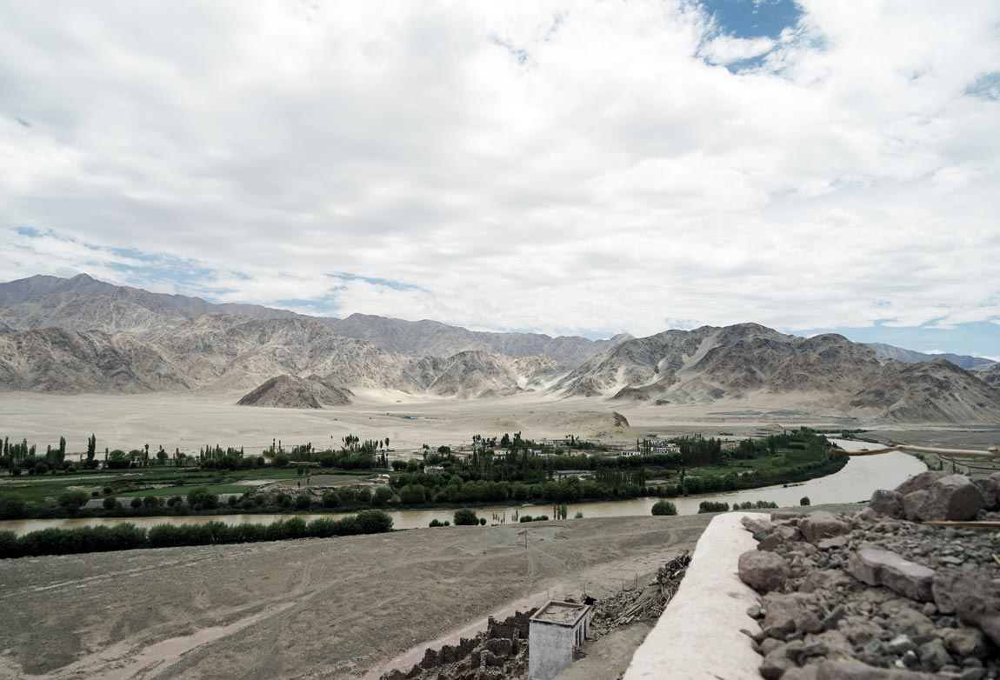
        
              <p id="sedimentImageDescriptionTwo" class="TemplateImageDescription">
                  The Indus River Valley in Ladakh, where
                  the Himalayas disintegrate and crumble,
                  in ongoing processes of weathering and
                  decay, July 2017.
              </p>
            

            </div>
        </div>
        
        <div id="sedimentSubFour" class="TemplateContainer">
            <div class="TemplateBlock">
            <h1 class="mainTitle">
                Saltating sediments
            </h1>
        
            <p id="sedimentCopyNine" class="copyTextLeft">
                Once freed from their middle-earth molecular
                strictures, particles of sediment join the weather, so
                to speak. Transported away from their originating
                rock by wind or water, they become dynamic, transcorporeal water bodies, barely distinguishable from
                the dynamics of the flows that carry them. They move
                by what is known as saltation – frolicking, tumbling
                and bouncing along. This mode of mobility transforms
                the particles themselves, the surfaces they move
                over and the flows that move them into turbulent
                assemblages of terra-aqueous matter.
            </p>
            
            <!-- 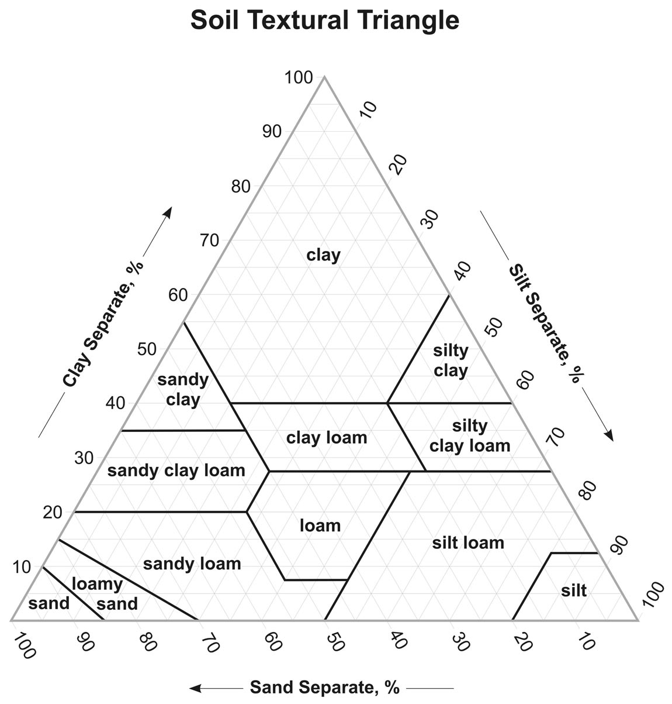 -->
        
                <iframe id="sedimentVideoOne" src="https://www.youtube.com/embed/mSUyURdB_qM?modestbranding=1&rel=0&controls=0&autoplay=1&mute=1&playlist=mSUyURdB_qM&loop=1" frameborder="0" allow="accelerometer; autoplay; clipboard-write; encrypted-media; gyroscope;" allowfullscreen></iframe>
        
                <iframe id="sedimentVideoTwo" src="https://www.youtube.com/embed/1Jag36dLjqY?modestbranding=1&rel=0&controls=0&autoplay=1&mute=1&playlist=1Jag36dLjqY&loop=1" frameborder="0" allow="accelerometer; autoplay; clipboard-write; encrypted-media; gyroscope;" allowfullscreen></iframe>

        
            <!-- <p id="sedimentImageDescriptionNine" class="TemplateImageDescription">
                The texture of sediment is a clue to
                its material composition. There is no
                mechanical analysis procedure to
                determine texture as accurate as the
                fingers of an experienced scientist.
                Source: <a href="https://www.nrcs.usda.gov/
                wps/portal/nrcs/detail/national/"><u>USDA, Soil textural triangle,
                no date.</u></a>
            </p> -->
        
        
            <p id="sedimentImageDescriptionThree" class="TemplateImageDescription">
                Top: Saltating sediment in the
                Ayeyarwady River, Bagan, September
                2019. <br> <br>
                Bottom: High-speed video of saltating
                sediment particles (0.5 mm sand).
                Source: <a href="https://www.youtube.com/
                watch?v=7Z0XwYkqXy4."><u>Mark Schmeeckle, mixed
                bedload and suspended sediments.</u></a> 
            </p>
            </div>
        </div>
        
        <div id="sedimentSubFive" class="TemplateContainer">
            <div class="TemplateBlock">
            <h1 class="mainTitle">
                Territorial disruption
            </h1>

            <p id="sedimentCopyFourteen" class="copyTextLeft">
                "All human habitation of the earth, even when it doesn’t
                entail circumnavigation or other excursions, is a
                kind of journey – a passage through the multi-scalar
                rhythms, singularities and thresholds of a planetary
                surface in motion."<sup>5</sup>
            </p>
        
            <p id="sedimentCopyTen" class="copyTextLeft">
                The forcefulness of this vitality carries with it the
                potential for violent territorial disruption. Dwelling
                alongside mobile terra-aqueous flows requires tuning
                to and working with their fluid becomings, while
                acknowledging their fearsome capacity to undo
                sustaining human connections and footings.
            </p>
        
            <iframe id="sedimentVideoThree" src="https://www.youtube.com/embed/i2T4Zgh51OI?modestbranding=1&rel=0&controls=0&autoplay=1&mute=1&playlist=i2T4Zgh51OI&loop=1" frameborder="0" allow="accelerometer; autoplay; clipboard-write; encrypted-media; gyroscope;" allowfullscreen></iframe>
        

            <div id="sedimentGridThirteen" class="TemplateImageContainer" >

              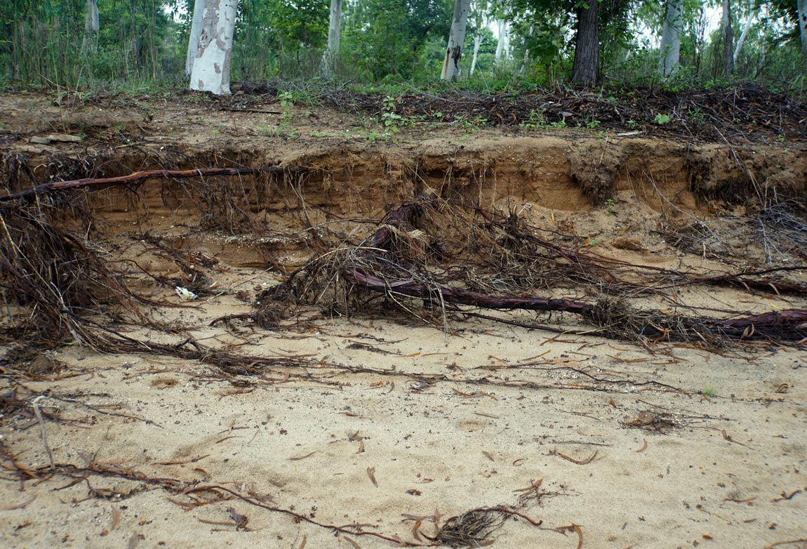

              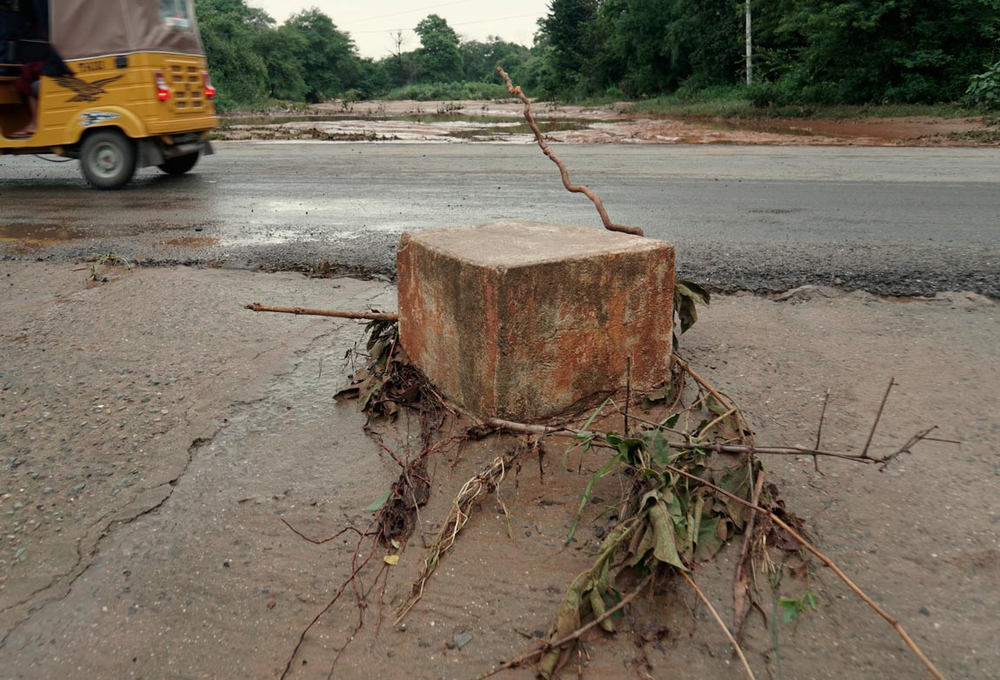
          </div>

            <!-- 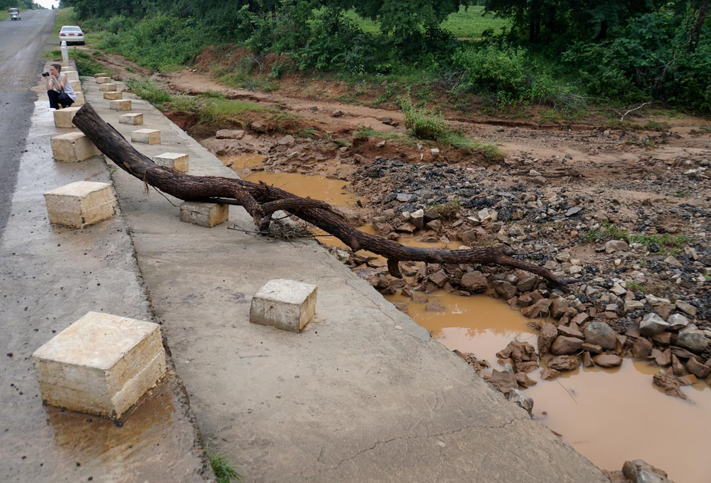 -->
        

        
            <p id="sedimentImageDescriptionEleven" class="TemplateImageDescription">
                Top and bottom: evidence of the
                destructive force of flash floods in the
                dry zone in Myanmar. <br> <br>
                Middle: a flash flood forms in a river bed
                in the dry zone in Myanmar.
            </p>
        
            </div>
        </div>
        
        <div id="sedimentSubSix" class="TemplateContainer">
            <div class="TemplateBlock">
            <h1 class="mainTitle">
                Making ground at Chaung Gyi
            </h1>
        
            <p id="sedimentCopyEleven" class="copyTextLeft">
                The fishing village of Chaung Gyi in Myanmar is
                located where the Ayeyarwady River river slows down
                and splits into its delta. At this point, banks and
                shoals constantly shift as the river adjusts its flows.
                Raymonde Bieler, while a student in the Monsoon
                Assemblages studio in 2018, designed a process
                to negotiate with the river to retain sediment as
                ground for a new civic institution for land claims and
                negotiations. The Land Registry, as she called it, was
                sited on the first sedimentary island assembled by her
                ground forming strategy, as a prototype for building in
                terra-aqueous terrain.
            </p>
        
            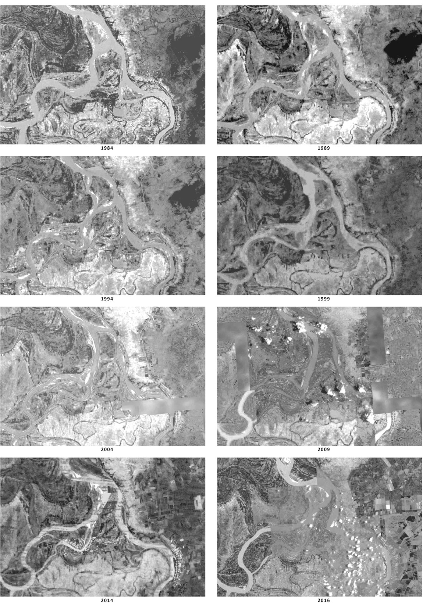
        
            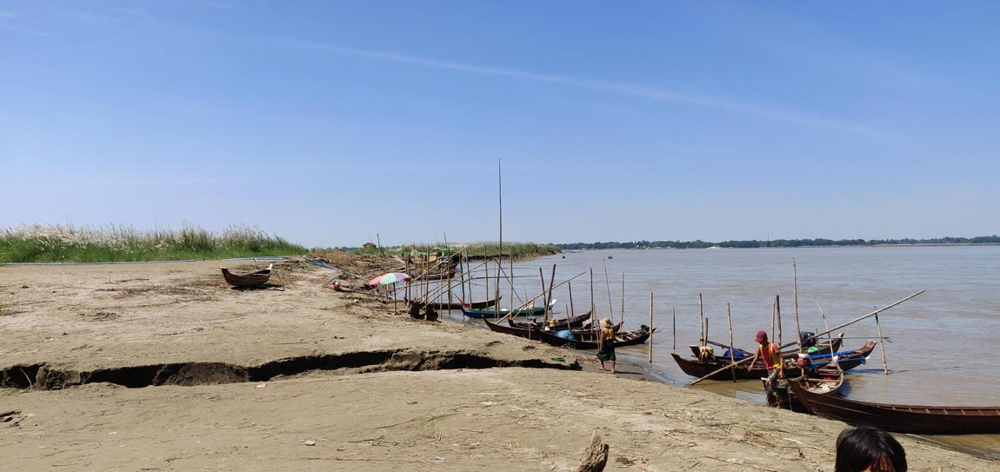
        
        
            <div id="sedimentGridSix" class="TemplateImageContainer">
                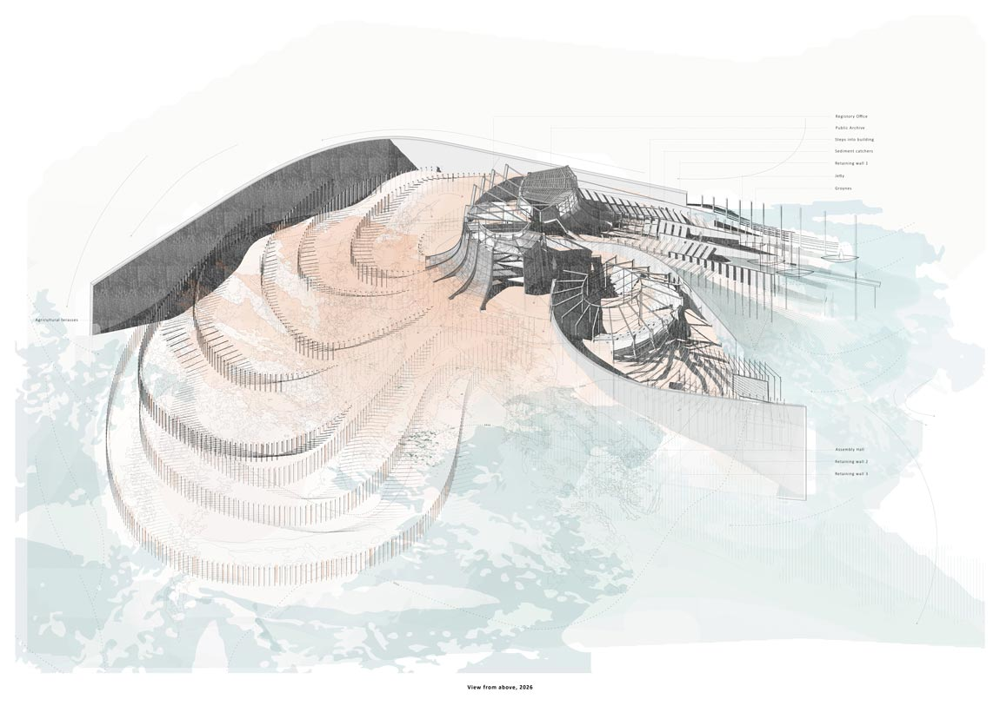
        
                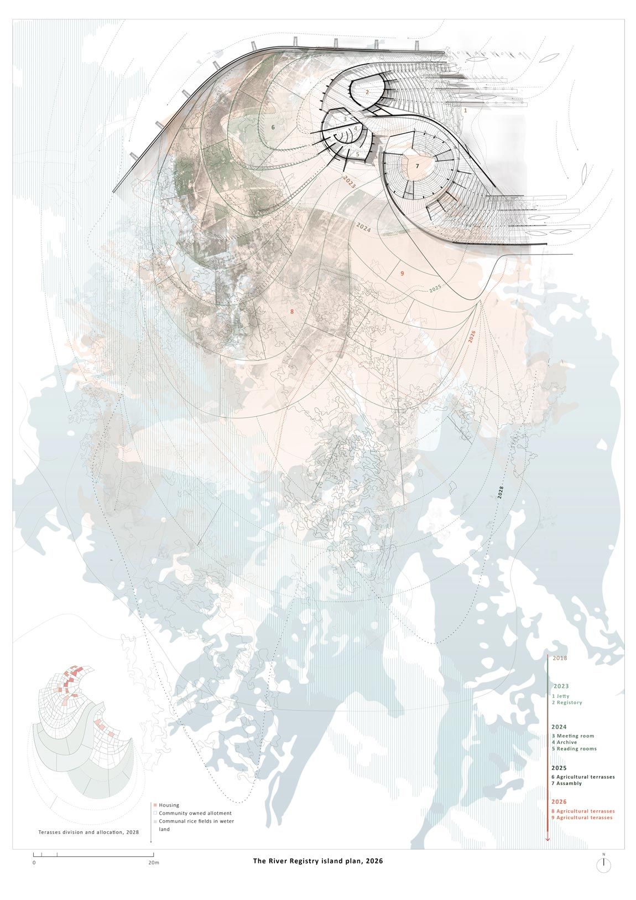
            </div>
            
            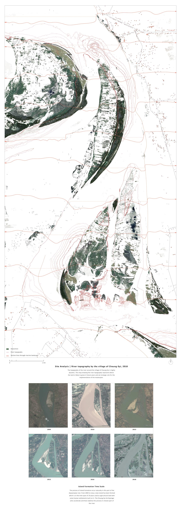
        
            
            <p id="sedimentImageDescriptionFive" class="TemplateImageDescription">
                A selection of drawings and images by
                Raymonde Bieler showing the dynamics
                of the Ayeyarwady River at Chaung Gyi
                in Myanmar and a strategy to direct this
                energy into the formation of new ground.
            </p>
        
            </div>
        </div>
        
        <div id="sedimentSubSeven" class="TemplateContainer">
            <div class="TemplateBlock">
            <h1 class="mainTitle">
                Alluvial deposits
            </h1>

            <p class="copyTextLeft sedimentCopySix">
              "The surface of the land … is made by nature to decay
              … Our fertile plains are formed from the ruins of the
              mountains".<sup>6</sup>
            </p>  
        
            <p class="copyTextLeft sedimentcopySeven">

                As monsoonal rivers descend to coastal plains, they
                slow down and spread out. They wash over low-lying
                terrain and, as they recede, they leave fertile traces of
                their passing material presence behind. At this point,
                sediment becomes soil and the sciences and politics
                of measure are born. It was the geometricians of
                Egypt, who, in retracing the borders of fields each year
                as the flood waters of the Nile River receded, gave
                rise, in the West, to ideas of politics, property and the
                law. Contrary to conceptions that these ideas were
                conjured up on solid ground, they emerged dripping
                from the alluvial deposits of the Nile, driven by the
                seasonal dynamics of the East African monsoon.
            </p>
        
            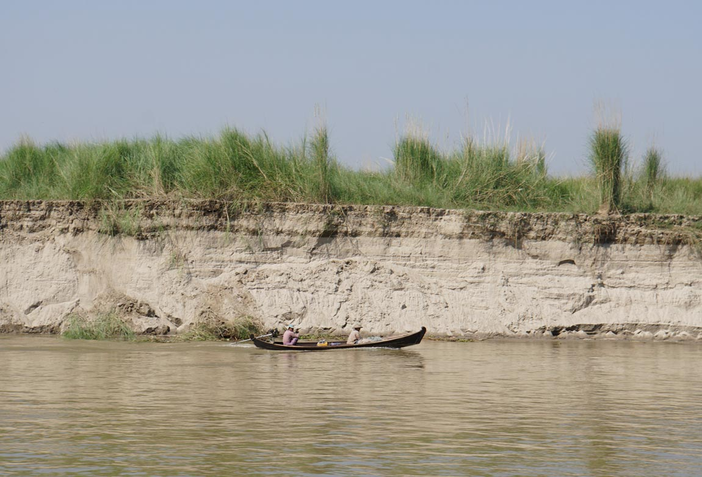
            
            <p id="sedimentImageDescriptionSix" class="TemplateImageDescription">
                Alluvial deposits of the Ayeyarwady River
                in Myanmar, November 2018.
            </p>
        
            </div>
        </div>
        
        <div id="sedimentSubEight" class="TemplateContainer">
            <div class="TemplateBlock">
            <h1 class="mainTitle">
                Fluid infrastructure
            </h1>
        
            <p id="sedimentCopyTwelve" class="copyTextLeft">
                As the monsoon redistributes rock strata as rubble,
                sand, silt and clay, humans lay claim to these deposits
                and rework them into fields, farms, bricks, roads,
                bridges and buildings. These transmogrifications
                tie politics, settlement and graft to the generosity of
                the monsoon and the disruptive, impolitic potential it
                harbours.
            </p>
        
            <div id="sedimentGridEleven" class="TemplateImageContainer">
        
              <iframe id="sedimentVideoFive" src="https://www.youtube.com/embed/-wo2Bv0LZuU?modestbranding=1&rel=0&controls=0&autoplay=1&mute=1&playlist=-wo2Bv0LZuU&loop=1" frameborder="0" allow="accelerometer; autoplay; clipboard-write; encrypted-media; gyroscope;" allowfullscreen></iframe>
        
                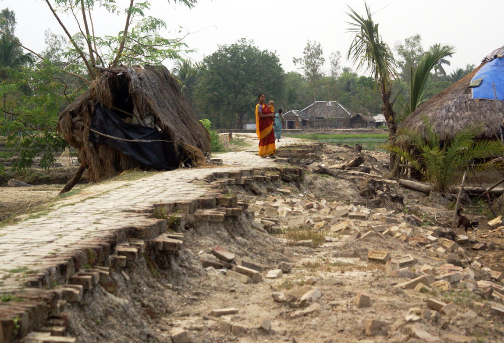
            </div>
        
            <p id="sedimentImageDescriptionTwelve" class="TemplateImageDescription">
                Top: bridge construction on the road
                between Bagan and Minbu, Myanmar. <br> <br>
                Bottom: brick footpath destroyed by a
                storm surge in the Sundarbans.
            </p>
        
            </div>
        </div>
        
        <div id="sedimentSubNine" class="TemplateContainer">
            <div class="TemplateBlock">
            <h1 class="mainTitle">
                Lithifying strata
            </h1>
        
            <p id="sedimentCopyThirteen" class="copyTextLeft">
                As sediment settles and sinks, it is subject to
                subterranean pressures and temperatures. Overlying
                layers compact lower layers, slowly squeezing out
                their water content and decreasing their porosity.
                Chemical and structural changes to sediment
                particles, the fluids between them and any organic
                matter buried with them occur. These lively physical
                and geochemical process produce the earth’s stores
                of breccia, sandstone, mudstone and limestone, its
                iron and aluminium ore, its aquifers and its fossil
                fuels. As sites of political issue formation, human
                interactions with these stratified conglomerations
                have long played constitutive roles in social and
                political life.
            </p>
            
            <div id="sedimentGridTen" class="TemplateImageContainer">
                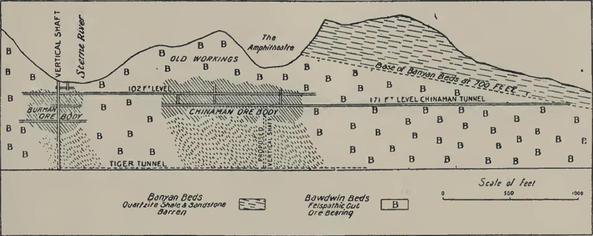
        
                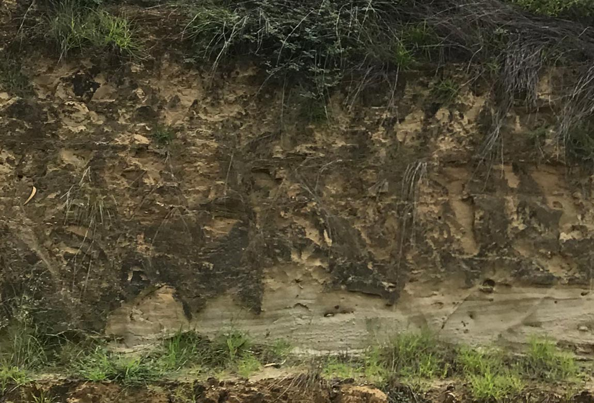
        
                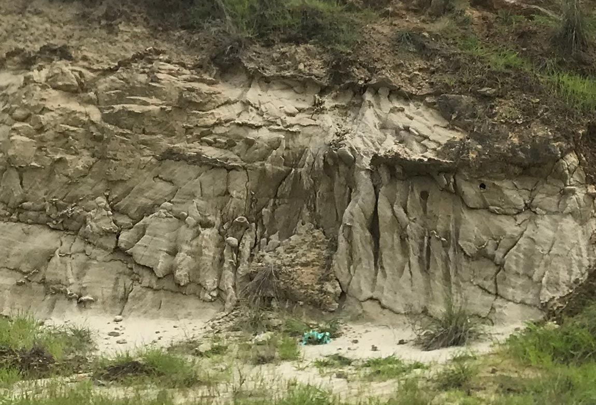
            </div>
            
            <p id="sedimentImageDescriptionSeven" class="TemplateImageDescription">
                Top: Cross section through the Namtu
                Bawdin mine, Myanmar. Source: J.D.
                Hoffman, ‘The Bawdin Mine’, <em>Mining
                Magazine</em>, 01 January 1916, no page.
                Public Domain via Wikimedia Commons. <br> <br>
                Bottom: Sedimentary strata, Myanmar,
                September 2019.
            </p>
        
            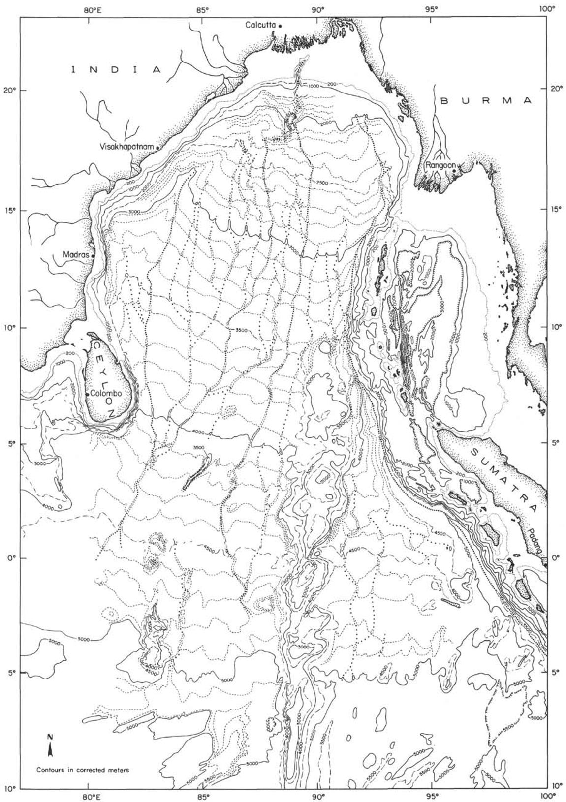
        
            <p id="sedimentImageDescriptionEight" class="TemplateImageDescription">
                Bathymetric chart of the Bay of Bengal
                showing the plume of Himalayan
                sediment spreading across its floor.
                Source: D.G. Moore, J.R. Curry, R.W.
                Raitt, F.J. Emmell, ‘Stratigraphic-Seismic
                Section Correlations and Implications
                to Bengal Fan History’, <em>Deep Sea Drilling
                Project</em>, vol. 22, 1974, p. 404.
            </p>
        
            </div>
        </div>
        
        <div id="sedimentSubTen" class="TemplateContainer">
            <div class="TemplateBlock">
            <div class="endlineSediment"></div>
           
             <p id="sedimentImageDescriptionFourteen" class="TemplateImageDescription">
                Text by Lindsay Bremner. <br>
                Design by Jonathan Cane. <br> <br>

                Introduction, Weathering climate <br>
                Drawing by Raymonde Bieler.<br>
                Photographs by Christina Leigh Geros and
                Lindsay Bremner.<br>
                Video by Christina Leigh Geros, edited by
                Lindsay Bremner.<br><br>

                Saltating sediments <br>
                Video by Lindsay Bremner.<br><br>

                Territorial disruption <br>
                Photographs and video by Lindsay Bremner.<br><br>

                Making ground at Chaung Gyi <br>
                Drawings and photograph by Raymonde
                Bieler.<br><br>
    
                Alluvial deposits <br>
                Photograph by Lindsay Bremner.<br><br>

                Fluid Infrastructure <br>
                Photograph and video by Lindsay Bremner.<br><br>

                Lithifying strata <br>
                Photographs by Lindsay Bremner.
            </p>
        

            <p id="sedimentImageDescriptionFifteen" class="TemplateImageDescription">
                <sup>1</sup> R. Carson, <em>The sea around us</em>, Oxford, Oxford
                University Press, 1950[1989], p. 77.<br><br>
        
                <sup>2</sup> A. Neimanis, <em>Bodies of Water</em>, London,
                Bloomsbury Open Access, 2017, p. 161. <br><br>
        
                <sup>3</sup> E. Povinelli, in N. Clark and B. Szerszynski,
                <em> Planetary Social Thought: The Anthropocene
                Challenges to the Social Sciences</em>, Cambridge,
                Polity Press, 2020, p. 166. <br><br>
        
                <sup>4</sup> A. Neimanis and R. L. Walker, ‘Weather:
                Climate Change and the “Thick Time” of
                Trans-corporeality’, <em>Hypatia</em> vol. 29, no. 3,
                2014, p. 559.<br><br>

                <sup>5</sup> N. Clark, ‘Politics of Strata’, <em>Theory, Culture
                and Society</em> vol. 34, no. 2-3, 2017, p. 228.<br><br>
        
                <sup>6</sup> J. Hutton, <em>Theory of the Earth</em>, New York,
                Classic Books International, 1788[2010], p. 7.
            </p>
        
        
            <div id="sedimentGridSeven" class="horizontalContainer">
            <div class="containerRow">
            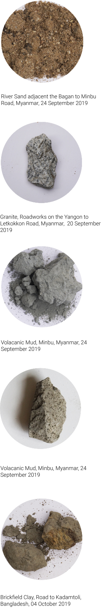
            
            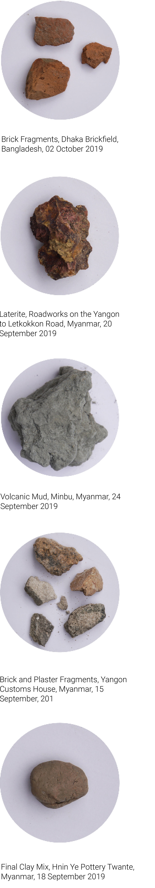
            
            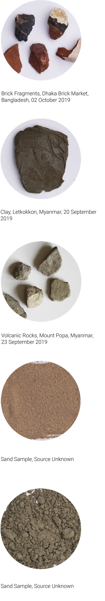
            </div>
            </div>
        
            <p id="sedimentImageDescriptionThirteen" class="TemplateImageDescription">
            Rock and sediment samples collected
            in Myanmar in September 2019.
            </p>
        
            <div class="endlineSedimentThree"></div>
        
            
        <div id="sedimentGridTwelve" class="horizontalContainer">
            <div class="containerRow">
            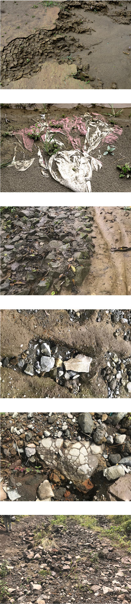
            
            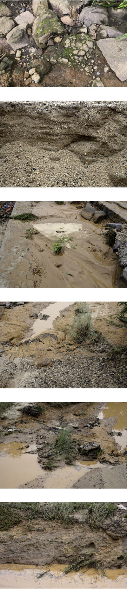
            
            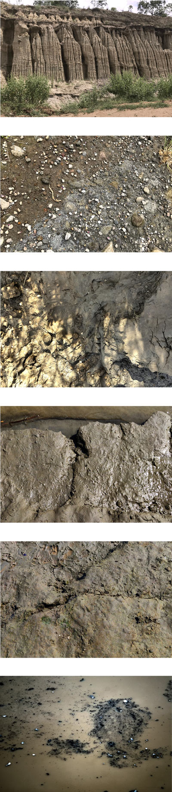
            </div>
        </div>
        
        <p id="sedimentImageDescriptionTen" class="TemplateImageDescription">
            Sediment textures, Myanmar, September
            2019.
        </p>
        
        
        </div>
        </div>
    </div>    
    
    <script src="https://cdn.jsdelivr.net/npm/vanilla-lazyload@17.3.0/dist/lazyload.min.js"></script>
  <script src="assets/plugins/image-zoom.js"></script>


</main>
</div>
